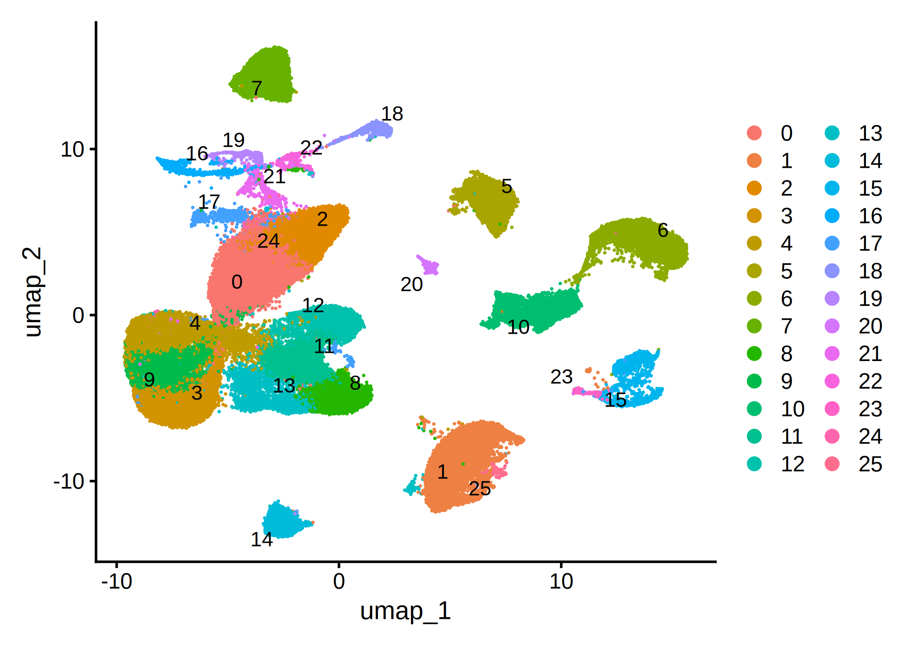

library(Seurat)
library(ggplot2)
library(dplyr)
library(patchwork)
library(stringr)
library(ggplot2)QC and Cell-level filtering
## load gene by cell matrices from all samples into individual seurat objects
seurat_obj_ls <-
lapply(c('iso-F-04','iso-F-22','iso-F-35','iso-M-00','iso-M-23','iso-M-40','soc-F-05','soc-F-24','soc-F-36','soc-M-01','soc-M-25','soc-M-41'),
function(x){
cell.use <- read.csv(paste0("./samples/",x,".Rat.allCells.csv"))%>%
filter(pass=="True") %>%
pull(X)
Read10X(paste0("alignment/",x,".Rat/",x,".Rat.star.solo/GeneFull_Ex50pAS/raw/")) %>%
CreateSeuratObject(project = "Rat", min.cells = 3, min.features = 200) %>%
subset(cells = cell.use)
})## merge all individual objects into one
Seurat_merged <- merge(seurat_obj_ls[[1]],seurat_obj_ls[-1],project="Rat",
add.cell.ids =c('iso-F-04','iso-F-22','iso-F-35','iso-M-00','iso-M-23','iso-M-40','soc-F-05','soc-F-24','soc-F-36','soc-M-01','soc-M-25','soc-M-41'))Seurat_mergedAn object of class Seurat
26597 features across 76385 samples within 1 assay
Active assay: RNA (26597 features, 0 variable features)
12 layers present: counts.1, counts.2, counts.3, counts.4, counts.5, counts.6, counts.7, counts.8, counts.9, counts.10, counts.11, counts.12Seurat_merged[["RNA"]] <-JoinLayers(Seurat_merged[["RNA"]])Seurat_mergedAn object of class Seurat
26597 features across 76385 samples within 1 assay
Active assay: RNA (26597 features, 0 variable features)
1 layer present: counts# The [[ operator can add columns to object metadata. This is a great place to stash QC stats
Seurat_merged[["percent.mt"]] <- PercentageFeatureSet(Seurat_merged, pattern = "^Mt-")options(repr.plot.width = 10, repr.plot.height = 5, repr.plot.res = 300)# Visualize QC metrics as a violin plot
p1 <- VlnPlot(Seurat_merged, features = c("nFeature_RNA", "nCount_RNA"), ncol = 3,layer='counts')p1## filter cells with detected gene number between 200 and 4000
obj <- subset(Seurat_merged, subset = nFeature_RNA > 200 & nFeature_RNA < 4000)objAn object of class Seurat
26597 features across 76089 samples within 1 assay
Active assay: RNA (26597 features, 0 variable features)
1 layer present: countsNormalizing the data
## using SCTransform to normalize the gene counts
obj <- SCTransform(obj, vst.flavor = 'v2', verbose = FALSE) ## Run PCA dimention reduction on the normalized counts
obj <- obj %>%
RunPCA(npcs = 30, verbose = FALSE,features = VariableFeatures(object = obj))VizDimLoadings(obj, dims = 1:2, reduction = "pca")options(repr.plot.width = 10, repr.plot.height = 8, repr.plot.res = 300)
DimHeatmap(obj, dims = 1:9, cells = 500, balanced = TRUE)options(repr.plot.width = 5, repr.plot.height = 4, repr.plot.res = 300)
ElbowPlot(obj)cell clustering
objAn object of class Seurat
52115 features across 76089 samples within 2 assays
Active assay: SCT (25518 features, 3000 variable features)
3 layers present: counts, data, scale.data
1 other assay present: RNA
1 dimensional reduction calculated: pca## add the group and sex information of each cell in the metadata
obj <- AddMetaData(
object = obj,
metadata = stringr::str_split(row.names(obj@meta.data),"-",simplify=T)[,1],
col.name = 'group'
)
obj <- AddMetaData(
object = obj,
metadata = stringr::str_split(row.names(obj@meta.data),"-",simplify=T)[,2],
col.name = 'sex'
)head(obj@meta.data)| orig.ident | nCount_RNA | nFeature_RNA | percent.mt | nCount_SCT | nFeature_SCT | group | sex | |
|---|---|---|---|---|---|---|---|---|
| <chr> | <dbl> | <int> | <dbl> | <dbl> | <int> | <chr> | <chr> | |
| iso-F-04_AAACCATAGACTATGCAATACCAGGCGCA | Rat | 2892 | 1519 | 0 | 3229 | 1519 | iso | F |
| iso-F-04_AAACCATAGACTATGCAATTCGGATTCGG | Rat | 2971 | 1489 | 0 | 3287 | 1489 | iso | F |
| iso-F-04_AAACCATAGGGTATGCTTGTCGGATTCGG | Rat | 1996 | 1189 | 0 | 3028 | 1208 | iso | F |
| iso-F-04_AAACCATAGTCCTACCAGTCTAACTAGGT | Rat | 5871 | 2496 | 0 | 4299 | 2456 | iso | F |
| iso-F-04_AAACCATAGTCCTACCAGTGTAGGATAAG | Rat | 2068 | 1185 | 0 | 3104 | 1190 | iso | F |
| iso-F-04_AAACCATAGTCGCGGTTGGTTGATACGAT | Rat | 1922 | 1121 | 0 | 3064 | 1153 | iso | F |
## run cell clustering with the first 15 PCs
obj <- obj %>%
FindNeighbors(reduction = "pca", dims = 1:15, verbose = FALSE) %>%
FindClusters(resolution = 0.7, verbose = FALSE) %>%
RunUMAP(reduction = "pca", dims = 1:15, verbose = FALSE)objAn object of class Seurat
52115 features across 76089 samples within 2 assays
Active assay: SCT (25518 features, 3000 variable features)
3 layers present: counts, data, scale.data
1 other assay present: RNA
2 dimensional reductions calculated: pca, umap## umap plot
options(repr.plot.width = 7, repr.plot.height = 5, repr.plot.res = 300)
# note that you can set `label = TRUE` or use the LabelClusters function to help label
# individual clusters
DimPlot(obj, reduction = "umap",label = TRUE, repel = TRUE)define doublet
remove the doublets with DoubleFinder
library('DoubletFinder')
homotypic.prop <- modelHomotypic(obj@meta.data$seurat_clusters) ## ex: annotations <- seu_kidney@meta.data$ClusteringResults
nExp_poi <- round(0.075*nrow(obj@meta.data)) ## Assuming 7.5% doublet formation rate - tailor for your dataset
nExp_poi.adj <- round(nExp_poi*(1-homotypic.prop))
## Run DoubletFinder with varying classification stringencies ----------------------------------------------------------------
seu_obj <- doubletFinder(obj, PCs = 1:10, pN = 0.25, pK = 0.09, nExp = nExp_poi, reuse.pANN = FALSE, sct = TRUE)head(seu_obj@meta.data)| orig.ident | nCount_RNA | nFeature_RNA | percent.mt | nCount_SCT | nFeature_SCT | group | sex | SCT_snn_res.0.7 | seurat_clusters | pANN_0.25_0.09_5707 | DF.classifications_0.25_0.09_5707 | |
|---|---|---|---|---|---|---|---|---|---|---|---|---|
| <chr> | <dbl> | <int> | <dbl> | <dbl> | <int> | <chr> | <chr> | <fct> | <fct> | <dbl> | <chr> | |
| iso-F-04_AAACCATAGACTATGCAATACCAGGCGCA | Rat | 2892 | 1519 | 0 | 3229 | 1519 | iso | F | 9 | 9 | 0.3220896 | Singlet |
| iso-F-04_AAACCATAGACTATGCAATTCGGATTCGG | Rat | 2971 | 1489 | 0 | 3287 | 1489 | iso | F | 10 | 10 | 0.2795970 | Singlet |
| iso-F-04_AAACCATAGGGTATGCTTGTCGGATTCGG | Rat | 1996 | 1189 | 0 | 3028 | 1208 | iso | F | 9 | 9 | 0.3189136 | Singlet |
| iso-F-04_AAACCATAGTCCTACCAGTCTAACTAGGT | Rat | 5871 | 2496 | 0 | 4299 | 2456 | iso | F | 14 | 14 | 0.2988720 | Singlet |
| iso-F-04_AAACCATAGTCCTACCAGTGTAGGATAAG | Rat | 2068 | 1185 | 0 | 3104 | 1190 | iso | F | 5 | 5 | 0.1328442 | Singlet |
| iso-F-04_AAACCATAGTCGCGGTTGGTTGATACGAT | Rat | 1922 | 1121 | 0 | 3064 | 1153 | iso | F | 9 | 9 | 0.3220896 | Singlet |
options(repr.plot.width = 6, repr.plot.height = 4, repr.plot.res = 300)
# note that you can set `label = TRUE` or use the LabelClusters function to help label
# individual clusters
DimPlot(seu_obj, reduction = "umap",label = TRUE, group.by = "DF.classifications_0.25_0.09_5707")seu_obj <- subset(x = seu_obj, subset = DF.classifications_0.25_0.09_5707=="Singlet")seu_objAn object of class Seurat
52115 features across 70382 samples within 2 assays
Active assay: SCT (25518 features, 3000 variable features)
3 layers present: counts, data, scale.data
1 other assay present: RNA
2 dimensional reductions calculated: pca, umapreclustering on the filtered cells
seu_obj <- seu_obj %>%
FindNeighbors(reduction = "pca", dims = 1:15, verbose = FALSE) %>%
FindClusters(resolution = 0.7, verbose = FALSE) %>%
RunUMAP(reduction = "pca", dims = 1:15, verbose = FALSE)options(repr.plot.width = 7, repr.plot.height = 5, repr.plot.res = 300)
# note that you can set `label = TRUE` or use the LabelClusters function to help label
# individual clusters
DimPlot(seu_obj, reduction = "umap",label = TRUE, repel = TRUE)
library(dplyr)
library(stringr)head(seu_obj@meta.data)| orig.ident | nCount_RNA | nFeature_RNA | percent.mt | nCount_SCT | nFeature_SCT | group | sex | SCT_snn_res.0.7 | seurat_clusters | pANN_0.25_0.09_5707 | DF.classifications_0.25_0.09_5707 | |
|---|---|---|---|---|---|---|---|---|---|---|---|---|
| <chr> | <dbl> | <int> | <dbl> | <dbl> | <int> | <chr> | <chr> | <fct> | <fct> | <dbl> | <chr> | |
| iso-F-04_AAACCATAGACTATGCAATACCAGGCGCA | Rat | 2892 | 1519 | 0 | 3229 | 1519 | iso | F | 10 | 10 | 0.3220896 | Singlet |
| iso-F-04_AAACCATAGACTATGCAATTCGGATTCGG | Rat | 2971 | 1489 | 0 | 3287 | 1489 | iso | F | 8 | 8 | 0.2795970 | Singlet |
| iso-F-04_AAACCATAGGGTATGCTTGTCGGATTCGG | Rat | 1996 | 1189 | 0 | 3028 | 1208 | iso | F | 10 | 10 | 0.3189136 | Singlet |
| iso-F-04_AAACCATAGTCCTACCAGTCTAACTAGGT | Rat | 5871 | 2496 | 0 | 4299 | 2456 | iso | F | 14 | 14 | 0.2988720 | Singlet |
| iso-F-04_AAACCATAGTCCTACCAGTGTAGGATAAG | Rat | 2068 | 1185 | 0 | 3104 | 1190 | iso | F | 3 | 3 | 0.1328442 | Singlet |
| iso-F-04_AAACCATAGTCGCGGTTGGTTGATACGAT | Rat | 1922 | 1121 | 0 | 3064 | 1153 | iso | F | 10 | 10 | 0.3220896 | Singlet |
Add substitutional sample name to metadata
seu_obj@meta.data$sampleID <- str_split(row.names(seu_obj@meta.data),"_",simplify = T)[,1]
seu_obj@meta.data <-
seu_obj@meta.data %>%
mutate(sample_name = case_when(sampleID == "iso-F-04" ~ "iso-F_1",
sampleID == "iso-F-22" ~ "iso-F_2",
sampleID == "iso-F-35" ~ "iso-F_3",
sampleID == "iso-M-00" ~ "iso-M_1",
sampleID == "iso-M-23" ~ "iso-M_2",
sampleID == "iso-M-40" ~ "iso-M_3",
sampleID == "soc-F-05" ~ "soc-F_1",
sampleID == "soc-F-24" ~ "soc-F_2",
sampleID == "soc-F-36" ~ "soc-F_3",
sampleID == "soc-M-01" ~ "soc-M_1",
sampleID == "soc-M-25" ~ "soc-M_2",
sampleID == "soc-M-41" ~ "soc-M_3"
))options(repr.plot.width = 10, repr.plot.height = 5, repr.plot.res = 300)
DimPlot(seu_obj, reduction = "umap", split.by = "sample_name",alpha=0.7,ncol=6)saveRDS(seu_obj,file="/project/zhuzhuzhang/lyang/scaleBio_RNA_rat_brain/out_mRatBN/merged_seurat_obj_DF_removed_2.rds")head(seu_obj@meta.data)| orig.ident | nCount_RNA | nFeature_RNA | percent.mt | nCount_SCT | nFeature_SCT | group | sex | SCT_snn_res.0.7 | seurat_clusters | pANN_0.25_0.09_5707 | DF.classifications_0.25_0.09_5707 | sampleID | sample_name | |
|---|---|---|---|---|---|---|---|---|---|---|---|---|---|---|
| <chr> | <dbl> | <int> | <dbl> | <dbl> | <int> | <chr> | <chr> | <fct> | <fct> | <dbl> | <chr> | <chr> | <chr> | |
| iso-F-04_AAACCATAGACTATGCAATACCAGGCGCA | Rat | 2892 | 1519 | 0 | 3229 | 1519 | iso | F | 10 | 10 | 0.3220896 | Singlet | iso-F-04 | iso-F_1 |
| iso-F-04_AAACCATAGACTATGCAATTCGGATTCGG | Rat | 2971 | 1489 | 0 | 3287 | 1489 | iso | F | 8 | 8 | 0.2795970 | Singlet | iso-F-04 | iso-F_1 |
| iso-F-04_AAACCATAGGGTATGCTTGTCGGATTCGG | Rat | 1996 | 1189 | 0 | 3028 | 1208 | iso | F | 10 | 10 | 0.3189136 | Singlet | iso-F-04 | iso-F_1 |
| iso-F-04_AAACCATAGTCCTACCAGTCTAACTAGGT | Rat | 5871 | 2496 | 0 | 4299 | 2456 | iso | F | 14 | 14 | 0.2988720 | Singlet | iso-F-04 | iso-F_1 |
| iso-F-04_AAACCATAGTCCTACCAGTGTAGGATAAG | Rat | 2068 | 1185 | 0 | 3104 | 1190 | iso | F | 3 | 3 | 0.1328442 | Singlet | iso-F-04 | iso-F_1 |
| iso-F-04_AAACCATAGTCGCGGTTGGTTGATACGAT | Rat | 1922 | 1121 | 0 | 3064 | 1153 | iso | F | 10 | 10 | 0.3220896 | Singlet | iso-F-04 | iso-F_1 |
options(repr.plot.width = 5, repr.plot.height = 3, repr.plot.res = 300)
seu_obj@meta.data %>%
ggplot(aes(x=sample_name))+
geom_bar(stat="count")+
theme_minimal()+
ggtitle("Cell numbers in sample")+
theme(axis.text.x = element_text(angle=30,vjust=1,hjust=1))+
labs(x="")options(repr.plot.width = 5, repr.plot.height = 3, repr.plot.res = 300)
seu_obj@meta.data %>%
ggplot(aes(x=sample_name,y=nFeature_RNA))+
geom_violin(width=1,position = position_dodge(0.9)) +
geom_boxplot(width=0.2, color="grey", alpha=0.4,position = position_dodge(0.9))+
theme_minimal()+
ggtitle("gene counts in each cell")+
theme(axis.text.x = element_text(angle=30,vjust=1,hjust=1))+
labs(x="")options(repr.plot.width = 10, repr.plot.height = 5, repr.plot.res = 300)
p1 <- DimPlot(seu_obj, reduction = "umap", group.by = "group",alpha=0.6)
p2 <- DimPlot(seu_obj, reduction = "umap", group.by = "sex",alpha=0.7)
p1+p2
seu_obj@meta.data %>%
ggplot(aes(x=seurat_clusters,y=nCount_RNA))+
geom_boxplot()+
theme_minimal()+
scale_x_discrete(name="")